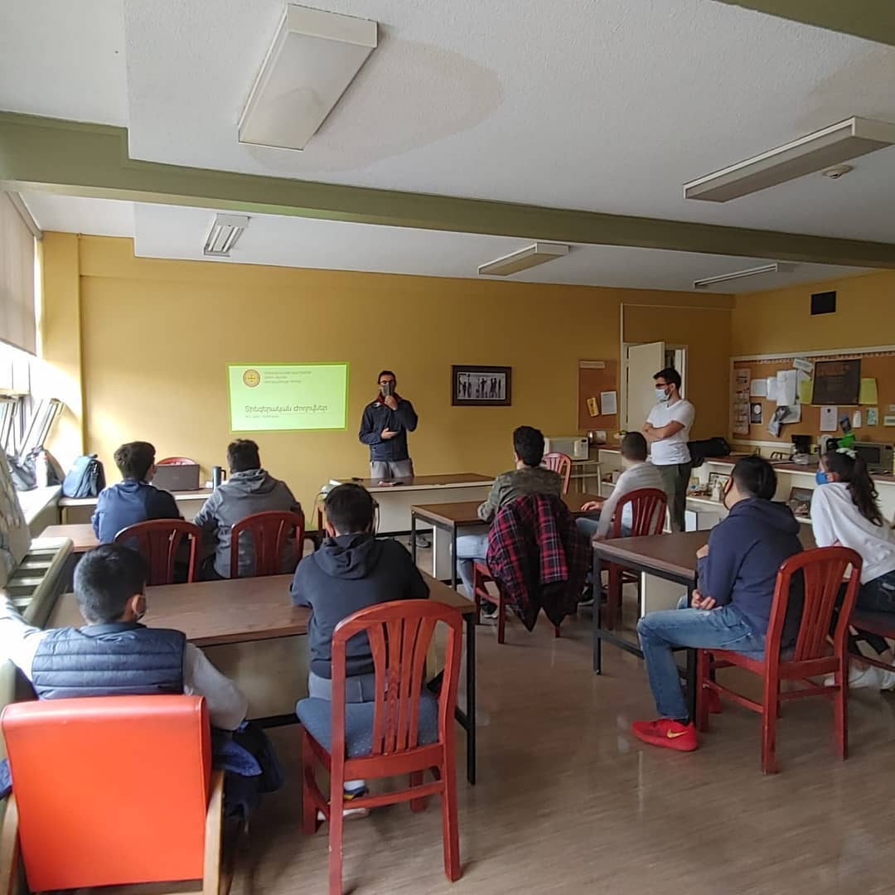
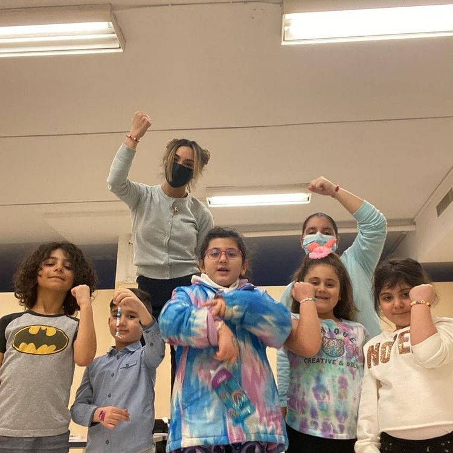

Entrevue avec le directeur de l'école du Dimanche Sourp Hagop
M. Toros Diac. Babikian
M. Toros Diac. Babikian (gauche)

Ահա 41 տարի է, որ Ս. Յակոբի Կիրակնօրեան կը ծառայէ։ Անցեալ տարեշրջանի կէսէն ասդին, քորոնա ժահռի կացութեան մէջ՝ ի՞նչ կ՚ընէ Կիրակնօրեան։
Ինչպէս գիտէք 41 տարիներէ ի վեր Կիրակնօրեայի տարեկան ծրագիրը կը սկսի Խաչվերացի Կիրակին իսկ իր աւարտին կը հասնի Մայիսի նախավերջին Կիրակին, 33-34 Կիրակնօրեայ դասընթացքներու տեւողութեամբ։ Դժբախտաբար անցեալ տարի այդպէս չընթացաւ կարգը։ Քորոնա ժահրի պատճառով, այդ տարեշրջանին վերջին անգամ ֆիզիքապէս Մարտի ութին ներկայ եղանք։
2020-ին Կիրակնօրեայ դպրոցի 40 ամեակը պիտի լրանար։ Այդ իսկ պատճառով, եկեղեցւոյս հովիւ՝ Տէր Գառնիկ Աւ․ քահանայ Գոյունեանին հետ համաձայնութիւն մը ունէինք Կիրակնօրեայի աշակերտներուն յանձնել տօնական օրերու հետ կապուած կարգ մը պարտականութիւններ, օրինակ՝ մեր աշակերտները պիտի կատարէին Ճռագալոյցի արարողութիւններու մարգարէական ընթերցումները, նաեւ Աւագ Շաբթուան ընթացքին կայանալիք Ոտնուայի արարողութեան նախատեսուած էր մեր աշակերտներուն մասնակցութիւնը։ Երբ կառավարութիւնը արգիլեց հաւաքոյթները, մենք եւս դադրեցանք ներկայանալէ դպրոց, սակայն մեր գործունէութիւնները չդադրեցան։
Ս․ Յարութեան տօնին նախօրէին Տէր Գառնիկին արտօնութեամբ, Կիրակնօրեայի աշակերտները կատարեցին Խթման ընթերցանութիւնները, անշուշտ առցանց կերպով։ Մեր ուսուցիչներէն խնդրեցինք առցանց հանդիպումներ կազմակերպել դասաւանդութիւնները շարունակելու համար, բայց ինչպէս գիտէք՝ ինչքան տարիքով փոքր ըլլան աշակերտները այնքան դժուար կը դառնայ առցանց աշխատիլը։ Բարձր կարգերուն համար այդ մէկը շատ աւելի հեշտ եղաւ, անոնք կրցան Աստուածաշնչական ընթերցումներ կատարել, փոքր խաղեր խաղալ համացանցով։ Փոքրերու պարագային միայն մի քանի հանդիպումներ կատարեցինք եւ ձեռային աշխատանքներ ուղարկեցինք, որպէսզի տան մէջ իրենց ծնողներուն օգնութեամբ ընեն։
Այս տարեշրջանը նորէն սկսանք Խաչվերացի Կիրակին ներկայանալով դպրոց, յաջորդ Կիրակին ալ եկեղեցի գացինք միասնաբար եւ Հաղորդութիւն առինք։ Նշեմ, որ Կիրակնօրեան ամէն օրէնքները քորոնա ժահրի կը յարգէ, օրինակ՝ աշակերտները միշտ իրենց ձեռքերը կը հականեխեն, հեռաւորութիւնը պահպանուած է, եւլն։ Սակայն թիւը աշակերտութեան նուազած է, շատ ծնողներ կը վախնան իրենց զաւակները ղրկել։ Նորէն ալ Կիրակնօրեան կը շարունակէ իր գործունէութիւնը։ Բարձր դասակարգերուն համար նախընտրեցինք առցանց շարունակել։ Անշուշտ բոլորս ալ կը փափքինք վերստին անգամ միասնաբար հաւագուինլ դպոցէն ներս։
Éducation religieuse
à l'école du Dimanche

Կրօնական դաստիարակութեան կարեւորութիւնը կը խնդրենք որ ամփոփ սահմանէք։
Հիմնական բացատրութիւնը հետեւեալն է՝ եթէ մարդ հաւատայ, որ հոգին գոյութիւն ունի ինչպէս միտքն ու ֆիզիքականը, կրնայ անոր սնունդ տալ։ Երբ նորածինի մը առողջութիւնը ապահովելու համար անոր կը կերակրեն, ապա ֆիզիքական շարժումներով կը հետաքրքրուին որպէսզի սկսի քալել կը նշանակէ որ անոնք կը հասկնան որ մարդը կարիք ունի սնունդի եւ հոգատարութեան որպէսզի զարգանայ, անշուշտ մտքի եւ ֆիզիքական զարգացումները իրարմէ տարբերուող բաներ են։ Հոգիի գոյութիւնը շատ աւելի տարբեր է եւ քիչ մը աւելի դժուար նիւթ է, այդ մէկը ընդունելնէն ետք՝ պէտք է աշխատին անոր զարգացման գործով։
Հոգին ալ պէտք է զարգանայ։ Ինչպէս մարմինը մարզանքով, իսկ միտքը՝ դպրոց երթալով կը զարգանայ, այնպէս ալ հոգին։ Հոգիի դաստիարակութեան ընդհանուր նիւթը կրօնական դաստիարակութիւնն է, մեր պարագային՝ Քրիստոնէական դաստիարակութիւնը։ Զարգացնելու համար հոգին, անշուշտ իւրաքանչիւր տարիքի անձ իր ընելիքները ունի։ Հայերուս պարագային կրօնական դաստիարակութիւնը շատ կարեւոր է, մանաւանդ սփիւռքի հայերուն համար։ Մենք մեր հողերէն դուրս կ՛ապրինք, բայց կը պատկանինք Հայաստանեաց Առաքելական եկեղեցւոյ, հիմնանական դաստիարակութիւնը ասիկա պէտք է ըլլայ։ Հայ ենք, որովհետեւ Հայաստանեաց Եկեղեցւոյ կը պատկանինք։
La «nouvelle génération»
de l'école du Dimanche

Ի՞նչ կոչ կ՛ուղղէք նոր սերունդի ծնողներուն։
Մենք որպէս ծնողք պէտք է մտքի եւ ֆիզիքական դաստիարակութեան հետ միասին լուրջի առնենք հոգեւոր դաստիարակութիւնը։ Երբ մեր զաւակները կը մկրտենք, կնքահայրը կը կրրկնէ որ երեխան կ՛ուզէ «Հաւատք, Յոյս, Սէր եւ Մկտութիւն»։ Ծնողքը գործնականպէս այս ամէն ինչը լրացնելու համար պէտք է ամէն Կիրակի եկեղեցի տանի իր զաւակը, կիրակնօրեայ արձանագրէ, որպէսզի զաւակը սկսի սորվիլ, Աստուածաշունչը սկսի հասկնալ։ Այսպիսով երբ մեծնալէն ետք եկեղեցի գայ, կը հասկնայ ինչ է կարդացուածն ու ըսուածը։
Կիրակնօրեան հոգեւոր կեանքի զարգացման մէջ շատ մեծ դեր ունի, մանաւանդ Գանատայի մէջ, ուր դպրոցներէն ներս արգիլուած է կրօնական դաստիարակութիւնը։ Այո, Քրիստոս ըսած է «Ձգեցէք որ մանուկները ինծի գան, արգելք մի՛ ըլլաք անոնց, որովհետեւ այդպիսիներուն է Աստուծոյ արքայութիւնը», բայց այս քաղաքին մէջ միայն արգելք չըլլալը բաւարար չէ, պէտք է ծնողները առաջնորդեն իրենց զաւակները դէպի կիրակնօրեայ եւ եկեղեցի: